Imagem: Gamelyn Games · edição DeluxeCooperativo · Exploração de masmorra
Como jogar Tiny Epic Dungeons
Para quem nunca jogou1 a 4 jogadores30 a 60 min14+Edição Meeple BR
· Redação Elite Boardgamers
Resumo em 1 minuto
Os heróis exploram a masmorra juntos, matam os Lacaios e derrotam o Chefe no Covil antes que a tocha chegue à caveira.
Em cada turno você se move, faz uma Ação Heroica e quantas Ações Livres puder pagar; no fim, a tocha desce um espaço.
Quase tudo é um Teste de Habilidade: um dado é o resultado, os dados +1 e +2 somam, e os que sobram dão Foco.
Com todos os Lacaios mortos e a Porta do Covil revelada, vocês entram no Covil e precisam levar o Chefe aos Altares.
Como você aprende: 5 etapas, da mesa montada à contagem de pontosLeitura do essencial: cerca de 16 min
À vista, só o essencial para jogar. O que abre com + é explicação, exemplo, exercício ou regra de caso especial: abra quando precisar.
Montar a mesa passo a passo
A montagem segue a página "Preparação" do manual p. 4 e 5: a frase de abertura dela (o passo 1 abaixo) e depois as letras A a V, na mesma ordem, e o diagrama da mesa montada p. 5. Cada passo abaixo diz entre parênteses a letra do manual. O que muda com o número de heróis, inclusive na partida solo, está na tabela do fim p. 4 e 17.
O que vem na caixap. 2:
Componente
Quantidade
Miniaturas de Herói
8
Tabuleiros de Herói
8
Tabuleiro de Tocha e Marcador de Tocha
1 de cada
Cartas de Masmorra (Entrada, Salas, Encontros e Porta do Covil)
28
Cartas de Espólio
26
Cartas de Feitiço
14
Cartas de Goblin
6
Cartas de Lacaio
8
Tabuleiros de Chefe
6
Marcadores de Goblin
4
Marcadores de Lacaio
8
Marcador do Chefe
1
Dados de Herói e Dado de Inimigo
3 e 1
Marcadores de Vida e de Foco
12
Marcadores de Desarme
7
Marcadores de Altar
5
Separe as Cartas de Masmorra em quatro grupos, pelo símbolo: Entrada, Salas, Encontros e Porta do Covil. Embaralhe cada grupo separadamente (p. 4, abertura, antes do item A). O símbolo de cada grupo é um losango azul, como os que o manual mostra na abertura da Preparação: escada na Entrada, arco de porta na Sala, cabeça de monstro no Encontro e um selo com uma estrela de pontas na Porta do Covil p. 4.
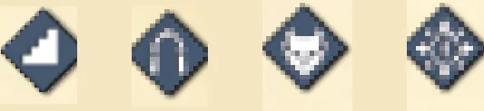
Os quatro símbolos, da esquerda para a direita: Entrada, Sala, Encontro e Porta do Covil. Ilustração: manual Meeple BR p. 4
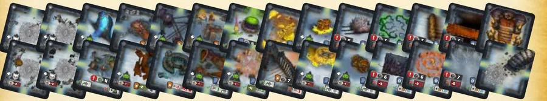
As 28 Cartas de Masmorra. Ilustração: manual Meeple BR p. 2
Baralho A: compre Salas conforme o número de heróis: 9 com 2 heróis, 7 com 3, 5 com 4 (p. 4, A).
Baralho B: para cada herói, compre 1 Encontro e 3 Salas e embaralhe tudo junto, sem revelar. Com 4 heróis, são 4 Encontros e 12 Salas (p. 4, B).
Baralho C: compre 3 Salas e embaralhe-as com a Carta da Porta do Covil, num baralho de 4 cartas (p. 4, C).
Empilhe os 3 baralhos com a face para baixo: C embaixo, B no meio e A em cima. Esse é o Baralho da Masmorra; ponha-o na mesa (p. 4, D).
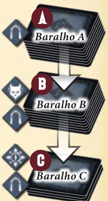
Os três baralhos: o A só de Salas, o B com Encontros e Salas, o C com a Porta do Covil e Salas; as setas mostram a pilha, com o A em cima e o C embaixo. Ilustração: manual Meeple BR p. 4
Devolva à caixa as Salas e os Encontros que não foram usados (p. 4, E).
Ponha a Carta de Entrada, virada para cima, no centro da mesa (p. 4, F).
Compre 4 cartas do topo do Baralho da Masmorra e ponha uma, virada para baixo, em cada um dos 4 lados da Entrada. Deixe espaço para uma grade de 7 por 7 cartas com a Entrada no meio: a Grade (p. 4, G).
Ponha 1 Marcador de Altar no símbolo dele na Carta de Entrada (p. 4, H).
Separe mais Marcadores de Altar, um por herói. Os que sobram voltam para a caixa (p. 4, I).
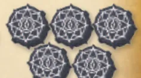
Os 5 Marcadores de Altar: 1 vai para a Entrada e os outros, um por herói, ficam separados. Ilustração: manual Meeple BR p. 2
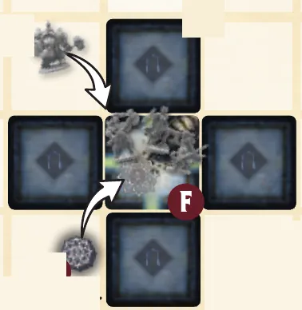
A Carta de Entrada no centro, com 4 Cartas de Masmorra viradas para baixo em volta, o Marcador de Altar e as miniaturas indo para ela; a letra F do manual marca a Entrada. Ilustração: manual Meeple BR p. 5
Ponha o Tabuleiro de Tocha fora da Grade, com o lado Ato 1 para cima, e deixe espaço em volta para as cartas nos locais de Goblin e de Lacaio (p. 4, J).
Ponha o Marcador de Tocha no espaço do topo da trilha marcado com o número de heróis: com 4 heróis, no espaço "4" (p. 4, K). Na figura da mesa montada, mais abaixo, a seta K aponta esse espaço.
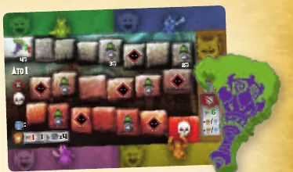
O Tabuleiro de Tocha, lado Ato 1, e o Marcador de Tocha. Ilustração: manual Meeple BR p. 2
Embaralhe as Cartas de Goblin e as de Lacaio em 2 baralhos separados, virados para baixo, perto do Tabuleiro de Tocha (p. 4, L).
Ponha os 4 Marcadores de Goblin ao lado dos números correspondentes no Tabuleiro de Tocha (p. 4, M).
Ponha Marcadores de Vida, um por herói, perto do Baralho de Lacaio: os corações cinza (no diagrama da p. 5, N); os vermelhos ficam para os heróis no passo 21. Os que não forem usados voltam para a caixa (p. 4, N; p. 5).
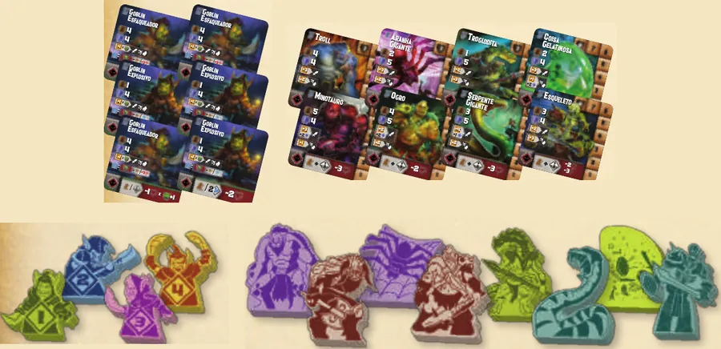
No alto, as Cartas de Goblin e as de Lacaio; embaixo, os 4 Marcadores de Goblin e os Marcadores de Lacaio. Ilustração: manual Meeple BR p. 2
Embaralhe os Tabuleiros de Chefe, compre um sem revelar e ponha-o fora da Grade, com o lado Ato 1 para cima. Os outros voltam para a caixa, sem ninguém ver (p. 4, O).
Ponha o Marcador do Chefe ao lado do Tabuleiro do Chefe (p. 4, P).
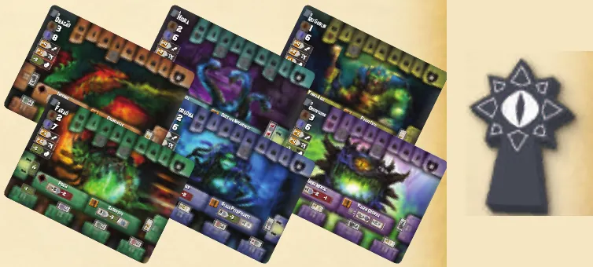
Os 6 Tabuleiros de Chefe e o Marcador do Chefe. Ilustração: manual Meeple BR p. 2
Embaralhe as Cartas de Espólio e as de Feitiço em dois baralhos separados, virados para baixo, fora da Grade, com espaço ao lado de cada um para uma linha de cartas reveladas (p. 4, Q).
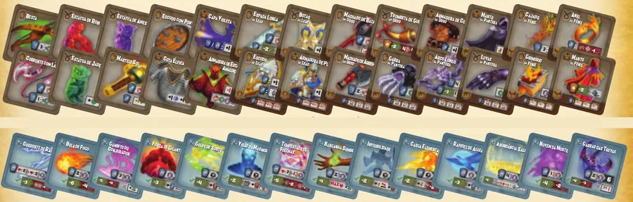
As Cartas de Espólio, no alto, e as de Feitiço, embaixo. Ilustração: manual Meeple BR p. 2
Dê a cada jogador um Tabuleiro de Herói. Vocês podem escolher, sortear ou sortear alguns e escolher entre eles. Os heróis não escolhidos voltam para a caixa (p. 5, R).
Cada jogador põe a sua Miniatura na Carta de Entrada (p. 5, S).
Cada jogador põe 1 Marcador de Vida e 1 Marcador de Foco nas trilhas do seu Tabuleiro de Herói, nos espaços de valor mais alto (p. 5, T).
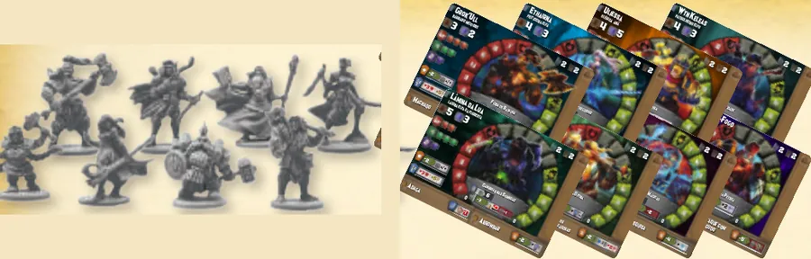
As 8 Miniaturas de Herói e os 8 Tabuleiros de Herói. Ilustração: manual Meeple BR p. 2
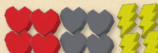
Os 12 Marcadores de Vida e de Foco: os corações vermelhos e os raios amarelos vão para os heróis (passo 21); os corações cinza ficam perto do Baralho de Lacaio (passo 15; no diagrama da p. 5, N). Ilustração: manual Meeple BR p. 2
Deixe os 7 Marcadores de Desarme ao alcance dos jogadores (p. 5, U).
Dê os 3 Dados de Herói e o Dado de Inimigo ao jogador mais novo, que faz o primeiro turno (p. 5, V).
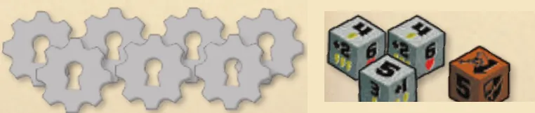
Os 7 Marcadores de Desarme e, à direita, os 3 Dados de Herói e o Dado de Inimigo. Ilustração: manual Meeple BR p. 2
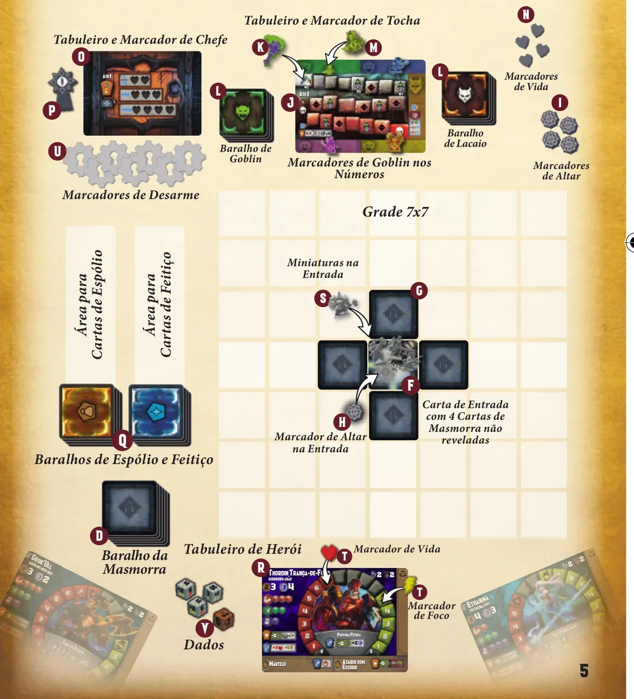
A mesa montada: Carta de Entrada no centro da grade de 7 por 7, com 4 cartas viradas e as miniaturas; acima, Tabuleiro de Chefe, Tabuleiro de Tocha e os baralhos de Goblin e de Lacaio; à esquerda, Espólio, Feitiço e o Baralho da Masmorra; embaixo, um Tabuleiro de Herói com os marcadores de Vida e de Foco. As letras seguem os itens da preparação. Ilustração: manual Meeple BR p. 5
Quem começa. O jogador mais novo, que recebe os dados (p. 5, V).
O que muda com o número de heróisp. 4:
Heróis
Baralho A (Salas)
Baralho B (Encontros + Salas)
Baralho C
Baralho da Masmorra
Marcador de Tocha
Marcadores de Altar (Entrada + separados) / na caixa
Marcadores de Vida perto do Baralho de Lacaio
2
9
2 + 6
4
21 cartas
espaço "2"
1 + 2 / 2
2
3
7
3 + 9
4
23 cartas
espaço "3"
1 + 3 / 1
3
4
5
4 + 12
4
25 cartas
espaço "4"
1 + 4 / 0
4
O que volta para a caixa: as Salas e os Encontros não usados (E); os Marcadores de Altar e de Vida que sobram (I e N); os Tabuleiros de Chefe não comprados, sem revelar (O); os heróis não escolhidos (R) p. 4 e 5.
Antes de começar, confira: Baralho da Masmorra com C embaixo, B no meio e A em cima, no tamanho da tabela; Entrada aberta com 4 cartas viradas para baixo em volta e 1 Marcador de Altar; Altares separados, um por herói; Tabuleiro de Tocha no Ato 1 com a tocha no espaço do número de heróis; baralhos de Goblin e de Lacaio, Marcadores de Goblin nos números e Marcadores de Vida, um por herói; Tabuleiro de Chefe sorteado no Ato 1 com o Marcador do Chefe; Espólio e Feitiço; cada herói com miniatura na Entrada, Vida e Foco no topo; Desarmes à mão; dados com o mais novo.
Uma partida em andamento, na foto da editora (edição Deluxe em inglês, com peças diferentes das da caixa comum). Não é a mesa no início. Imagem: Gamelyn Games · edição Deluxe
Partida com 2 heróis. Qual montagem está certa?
Com 2 heróis, o Baralho A tem 9 Salas, o B tem 1 Encontro e 3 Salas por herói (2 e 6), e a tocha começa no espaço do topo com o número de heróis, o "2" p. 4. O Baralho A de 5 Salas é o de 4 heróis, e 1 Encontro e 3 Salas é a conta de um herói só.
Comece a jogar em 4 minutos
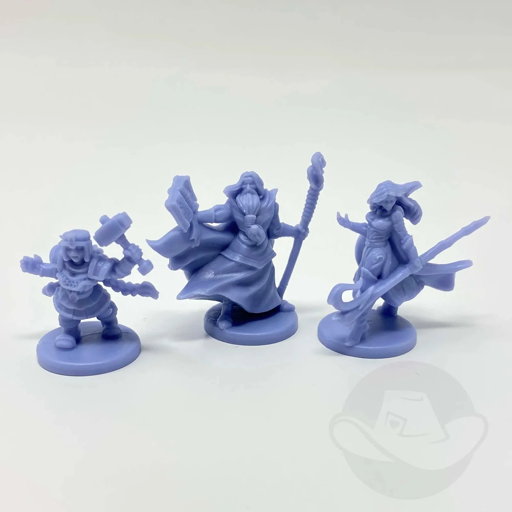
Imagem: Gamelyn Games · edição Deluxe
Meta: em 4 minutos de leitura, montar a mesa e jogar o seu primeiro turno sem abrir o manual.
A ideia do jogo
Jogo cooperativo em dois atos. No Ato 1, os heróis exploram a masmorra carta a carta, enfrentam Goblins e Lacaios e procuram a Porta do Covil; no Ato 2, enfrentam o Chefe. A tocha desce um espaço ao fim de cada turno: na caveira, todos perdem. Quase toda ação é um Teste de Habilidade com os Dados de Herói p. 3 e 6.
Monte a mesa
A montagem completa, com figuras, está na seção "Montar a mesa passo a passo", logo acima. O essencial p. 4 e 5:
Baralho da Masmorra, virado para baixo, de cima para baixo: A, Salas (2 heróis: 9; 3: 7; 4: 5); B, 1 Encontro e 3 Salas por herói; C, 3 Salas e a Porta do Covil.
Carta de Entrada aberta no centro, com 1 Marcador de Altar e 1 carta virada para baixo em cada lado. Espaço para uma grade de 7 por 7.
Tabuleiro de Tocha no Ato 1, tocha no espaço do número de heróis; baralhos de Goblin e de Lacaio; Marcadores de Goblin nos números do Tabuleiro de Tocha; 1 Marcador de Vida perto do Baralho de Lacaio e 1 de Altar por herói (separados para usar depois).
Tabuleiro de Chefe sorteado, sem revelar, no Ato 1, com o Marcador do Chefe ao lado (para usar depois). Baralhos de Espólio e de Feitiço. Marcadores de Desarme.
Cada jogador: Tabuleiro de Herói, miniatura na Entrada, Vida e Foco no topo das trilhas. O mais novo pega os dados e começa.
Seu primeiro turno
Em qualquer ordem, nada obrigatório: Mover, 1 Ação Heroica (placa azul) e Ações Livres (placa laranja). A Ação Heroica encerra o movimento p. 6 e 7.
Mover. Cada sala custa 1 de Velocidade, por corredor. Carta virada vizinha: vire, gire até um corredor ligar com a sua sala, ponha cartas viradas nos corredores abertos dela dentro da grade, entre e resolva o ícone p. 7 e 8.
Encontro com Goblin: 1 dano e pare. Carta de Goblin no espaço livre mais baixo do Tabuleiro de Tocha; o marcador daquele número vai para a sala. Encontro com Lacaio: 2 danos e pare; carta à direita do Tabuleiro de Tocha, Marcador de Vida no topo da trilha dela, Marcador de Lacaio na sala. Armadilha: teste do lado esquerdo da carta; fracasso, dano da caixa vermelha p. 8.
Atacar (Ação Heroica): Dados de Herói conforme os cubos da Habilidade, mais o Dado de Inimigo. 1 dado é o resultado; +1 e +2 somam a ele. Acima da Defesa: dano = diferença. Inimigo vivo contra-ataca (etapa 4) p. 9, 11 e 12.
Teste com sucesso: cada raio nos dados não usados dá 1 Foco p. 9.
Fim do turno: a tocha desce 1 espaço. Ícone onde ela parar: resolva. Depois joga o próximo jogador, em sentido horário p. 6 e 15.
Ainda não precisa saber
Portal: etapa 2. Desarmar: etapa 3. Procurar, Descansar, feitiços e espólios: etapa 3. Contra-ataque completo e o que acontece quando a tocha aciona os inimigos: etapa 4. Covil e Chefe: etapa 5.
Como a partida acaba
Com todos os Lacaios mortos e a Porta do Covil revelada, vocês entram no Covil; zerar a Vida do Chefe vence. Perdem com a tocha na caveira, um quinto Goblin ou nenhum corredor aberto sem a Porta do Covil revelada p. 6.
Prefere ver? Partida resumida em vídeo. Ele complementa este guia; em caso de diferença, vale o manual.
TINY EPIC DUNGEONS - Gameplay resumida em 10 minutos, canal Duque Board Games · abrir no YouTube
0Antes de tudo: o que é este jogoOpcional
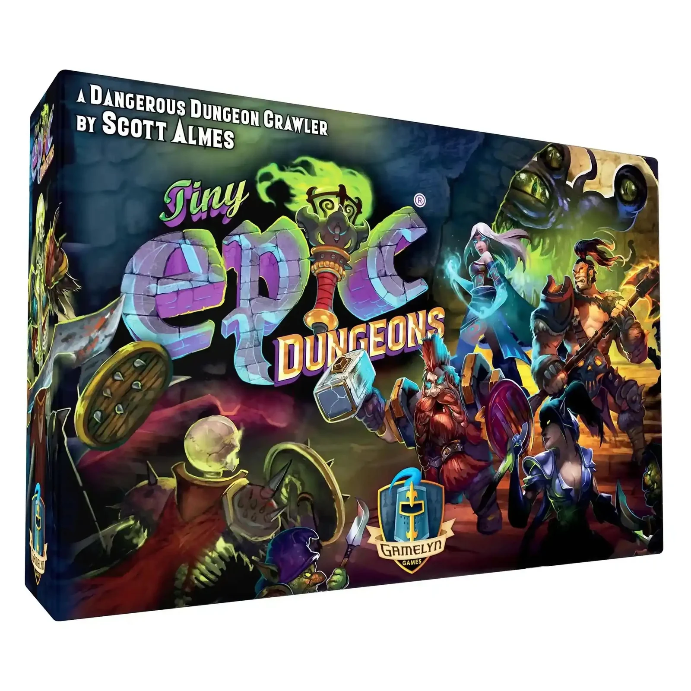
Imagem: Gamelyn Games · edição DeluxeAbrir esta seção
Tiny Epic Dungeons é cooperativo: todos ganham ou perdem juntos. Cada jogador controla um herói, com Tabuleiro de Herói e miniatura. No solo, você controla pelo menos dois heróis, e o número de heróis conta como número de jogadores em todas as regras p. 3 e 17.
O Ato 1 é a exploração. A masmorra nasce na mesa: as cartas viradas em volta da Entrada são salas ainda não vistas, e cada uma que você revela abre caminho para outras. Algumas salas têm Goblins, Lacaios, armadilhas ou algo para Procurar. A meta do ato é matar todos os Lacaios (um por herói) e achar a Porta do Covil p. 7, 8 e 17.
O Ato 2 é a Batalha Final contra o Chefe, que só se revela ao entrar no Covil. Ele tem barreiras, os Altares, e é preciso atraí-lo pela masmorra até elas p. 18 e 19.
Cada herói tem quatro atributos: Vida (o dano que aguenta), Foco (paga habilidades, feitiços e ajustes nos dados), Velocidade (quantas salas anda por turno) e Defesa (quanto anula de um contra-ataque). E três Habilidades: Força, Agilidade e Intelecto, com 1 a 3 cubos, que são os dados que você rola em cada teste p. 6.
1Como este guia ensinaOpcional
Imagem: Gamelyn Games · edição DeluxeAbrir esta seção
O guia tem cinco etapas, na ordem em que a partida acontece: montar a mesa, mover e explorar, fazer testes e ações, lutar e sobreviver à tocha, e entrar no Covil para enfrentar o Chefe.
Em cada etapa fica à vista o essencial: o passo a passo e o erro mais comum. O porquê, os exemplos resolvidos e as regras de casos que nem sempre aparecem abrem com um toque. Nas tarefas, a resposta aparece quando você toca numa opção. No fim há uma avaliação curta e uma folha para consultar na mesa.
2Etapa 1: montar a mesa
Imagem: Gamelyn Games · edição DeluxePor que funciona assim
A figura completa da mesa montada está na seção "Montar a mesa passo a passo", no início do guia.
Regra adicional: Partida soloSobre a edição: Duas edições brasileirasPratique esta etapa: exercícios com respostas
3Etapa 2: mover e explorar
Por que funciona assim
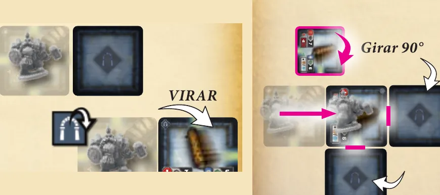
Revelar uma sala: o herói vira a carta vizinha (à esquerda), gira a sala nova até um corredor dela ligar com a sala de onde veio e põe cartas viradas para baixo nos corredores abertos dela (à direita). Ilustração: manual Meeple BR p. 7
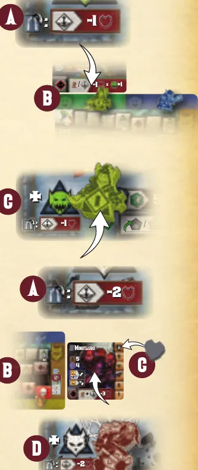
Os dois encontros. Goblin: 1 dano (A), a carta no espaço livre mais baixo do Tabuleiro de Tocha (B) e o marcador do mesmo número na sala (C). Lacaio: 2 danos (A), a carta à direita do Tabuleiro de Tocha (B), um Marcador de Vida no topo da trilha dela (C) e o marcador na sala (D). Ilustração: manual Meeple BR p. 8Regra adicional: PortalRegra adicional: Armadilha desarmadaRegra adicional: Ícone que dispensa entrarRegra adicional: Baralho de Goblin vazioVer um exemplo resolvidoPratique esta etapa: exercícios com respostas
4Etapa 3: testes e ações do herói
Imagem: Gamelyn Games · edição DeluxePor que funciona assimRegra adicional: Procurar e Desarmar com inimigo na salaRegra adicional: PesquisaRegra adicional: Conjuntos LendáriosRegra adicional: Foco e Vida no zeroSobre a edição: Desarmar: "ou" ou "e"?Ver um exemplo resolvidoPratique esta etapa: exercícios com respostas
5Etapa 4: lutar e sobreviver à tocha
Por que funciona assim
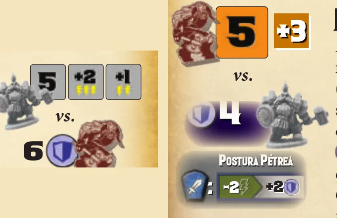
À esquerda, o ataque com o Martelo: 5 com +2 e +1 dá 8 contra a Defesa 6 do Minotauro (4 mais 2 contra Corpo-a-Corpo), 2 de dano. À direita, o contra-ataque: 5 no Dado de Inimigo mais 3 contra a Defesa 4 de Thordin, que paga 2 de Foco na Postura Pétrea e sobe para 6. Ilustração: manual Meeple BR p. 11 e 12
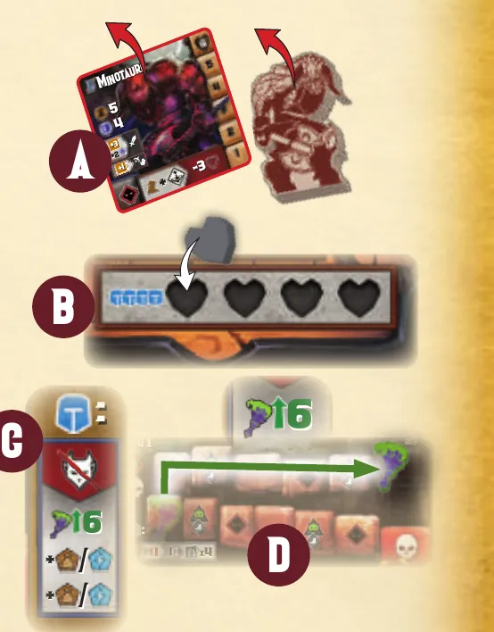
Lacaio morto: carta e marcador saem do jogo (A), o Marcador de Vida vai para um coração do Tabuleiro do Chefe (B), e a recompensa do Tabuleiro de Tocha dá dois espólios ou feitiços (C) e faz a tocha subir 6 espaços (D). Ilustração: manual Meeple BR p. 13Regra adicional: Herói inconscienteRegra adicional: Feitiço sem linha de visãoRegra adicional: Inimigos sem herói conscienteVer um exemplo resolvidoPratique esta etapa: exercícios com respostas
6Etapa 5: o Covil e a Batalha Final
Por que funciona assim
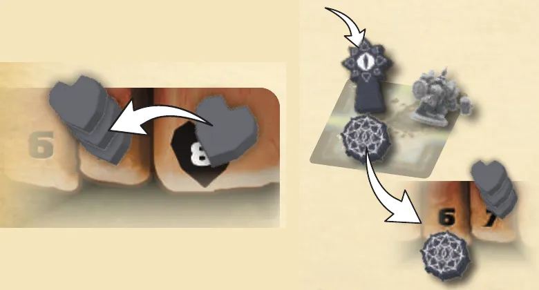
À esquerda, 3 de dano repartido: cada um dos 3 Marcadores de Vida desce 1 espaço, em vez de um só descer 3. À direita, o Marcador do Chefe entra na sala com Marcador de Altar, e o Altar vai para a trilha, liberando a passagem. Ilustração: manual Meeple BR p. 19Regra adicional: Ataques dentro e fora do CovilRegra adicional: Goblins no CovilRegra adicional: Tocha do ChefeRegra adicional: Entrada ocupadaRegra adicional: Inconsciente no CovilVer um exemplo resolvidoPratique esta etapa: exercícios com respostas
7Situações especiaisOpcional
Imagem: Gamelyn Games · edição DeluxeAbrir esta seção
Ação Heroica antes de andar. A Ação Heroica encerra o movimento. Quem ataca antes de andar não anda depois no mesmo turno p. 7.
Ação Heroica adicional. Alguns efeitos dão uma Ação Heroica a mais; a Referência dos Ícones avisa que esse efeito não pode ser usado várias vezes no mesmo turno (verso).
Nada a fazer no turno. Mover, Ação Heroica e Ações Livres são opcionais, mas a tocha desce igual p. 6.
Revelar com a Ação Livre. O manual não diz como orientar as salas reveladas pela Ação Livre Revelar Salas Adjacentes Não Exploradas, nem se cartas novas entram nos corredores abertos delas. Combinem antes; uma leitura possível é seguir a regra de revelar ao andar.
Sair de uma sala com inimigo. O manual diz que, ao entrar numa sala com inimigo, você não se move mais naquele turno, e que só a Furtividade deixa "passar" por inimigos p. 7. Não diz se quem começa o turno numa sala com inimigo pode sair dela; a regra do Portal fala em salas "caso inimigos impeçam que você saia dela normalmente", sem definir quando isso acontece p. 7. Combinem antes.
Encontro já resolvido. O manual manda resolver os ícones "imediatamente quando um herói entra neste local" p. 8, mas o Encontro com Goblin e o com Lacaio falam da sala "que acaba de ser revelada", e só a Armadilha diz "cada vez que um herói entra" p. 8. Este guia trata os Encontros como efeito da revelação, não de cada entrada.
Desarmar mais tarde. O manual só descreve Desarmar depois do teste de escapar p. 8 e 10 e não diz se dá para tentar num turno seguinte, já na sala. Na dúvida, tente logo depois do teste.
Limite de cartas cheio. O manual dá os limites, mas não diz o que fazer ao descobrir uma carta com o limite cheio. Como descartar é Ação Livre, uma leitura é descartar uma das suas para abrir espaço.
8Avaliação finalOpcional
Imagem: Gamelyn Games · edição DeluxeAbrir esta seção
Responda sem consultar. Ao tocar numa opção, aparecem a resposta certa e a etapa a reler.
1. Partida com 2 heróis. Quantas Salas vão para o Baralho A?
9 Salas com 2 heróis; 7 com 3; 5 com 4 p. 4. Se errou, releia a etapa 1.
2. Você revela uma sala e ela tem Encontro com Lacaio. Você tinha 3 de Velocidade sobrando. O que acontece?
2 danos e o movimento acabap. 8. Se errou, releia a etapa 2.
3. Num teste de Intelecto 5 você tira 3, +2 e 6 e usa só o 6 como resultado. Quanto Foco ganha com os outros dois dados?
O +2 tem 3 raios e o 3 tem 1: 4 de Foco, porque o teste deu certo p. 9. Se errou, releia a etapa 3.
4. Seu ataque Corpo-a-Corpo dá 6 contra um inimigo de Defesa 6. Quanto dano causa?
Nenhum: o resultado precisa ser maior que a Defesa p. 11. Se errou, releia a etapa 4.
5. O Dado de Inimigo mostra Escudo no contra-ataque de um Lacaio com +1 contra ataques à Distância. Você atacou à Distância. Quanto recebe?
Com Escudo, o dano é o modificador: 1 p. 12. Se errou, releia a etapa 4.
6. A tocha passa por Acione Ações do Inimigo. Sua Defesa é alta. Ela protege você?
Não protegep. 15. Se errou, releia a etapa 4.
7. Seu herói caiu inconsciente no turno passado. O que faz no turno de agora?
Descansar, mover e pararp. 13. Se errou, releia a etapa 4.
8. A Porta do Covil foi revelada, mas um Lacaio ainda está vivo. Vocês podem entrar no Covil?
Não: todos os Lacaios precisam estar mortos p. 17. Se errou, releia a etapa 5.
9. O Chefe está no Tabuleiro do Chefe, e um espaço de Altar sem Marcador de Altar fica entre os Marcadores de Vida e o zero. Como liberar?
O Altar só é coberto quando o Marcador do Chefe entra numa sala com Marcador de Altarp. 19. Se errou, releia a etapa 5.
10. Qual destas situações não faz os heróis perderem?
Foco 0 não tem efeito negativo além de limitar o que você paga p. 6. Se errou, releia a etapa 3.
9Para consultar durante a partida
Imagem: Gamelyn Games · edição Deluxe
Seu turno (qualquer ordem, nada obrigatório)
Mover: 1 de Velocidade por sala; revelar custa 1 e pede corredor ligado.
Fim: a tocha desce 1; resolva o ícone onde parar ou por onde passar. Passa a vez em sentido horário.
Perigos ao entrar: Goblin, 1 dano e para; Lacaio, 2 danos e para; Armadilha, teste a cada entrada; sala com inimigo, para.
Teste: dados = cubos da Habilidade (1 a 3); 1 dado como resultado, mais os "+"; igual ou maior que o número passa. Sucesso: raios dos dados não usados viram Foco. Cada 6 não usado: 1 de Vida. Modificar 1 dado em 1: 2 de Foco.
Ataque: resultado maior que a Defesa; dano = diferença. Feitiço ignora Defesa.
Contra-ataque: 2 a 5, dado mais modificador; Escudo, dano = modificador; Tocha, sem dano e tocha desce 1. Goblin: modificador = Goblins na masmorra.
Ações do Inimigo: Goblins do 1 ao 4, depois Lacaios da esquerda para a direita (no Ato 2, o Chefe). Defesa não bloqueia.
Matar: Goblin, recompensa da carta. Lacaio, Marcador de Vida para o Tabuleiro do Chefe, 2 espólios ou feitiços, tocha sobe 6 (até o início).
Descansar: 3 de Vida e 5 de Foco. Portal: 2 de Foco. Pesquisa: 4 de Foco. Provocar o Chefe: 2 de Foco.
Limites: 2 de Mão, 1 Vestimenta, 2 Joias, 2 Feitiços.
Derrota: tocha na caveira; quinto Goblin; sem corredor aberto e sem Porta do Covil. Vitória: Vida do Chefe a zero.
Página do produto da Meeple BR, para a ficha: 1 a 4 jogadores, 30 a 60 minutos, 14 anos ou mais. Consultada em 01/11/2026.
Não usado: o manual da reedição da Galápagos/Asmodee Brasil (TNE001). Não foram procurados FAQ nem errata.
Vídeo: "TINY EPIC DUNGEONS - Gameplay resumida em 10 minutos!", canal Duque Board Games, título e canal confirmados pelo oEmbed do YouTube em 01/11/2026. Não usado como fonte de regra.
Regras tiradas do Manual do Aventureiro da edição brasileira da Meeple BR (2022, 20 páginas, tradução de Romir G. E. Paulino). Os nomes seguem os impressos nessa edição. As páginas citadas são as desse manual.